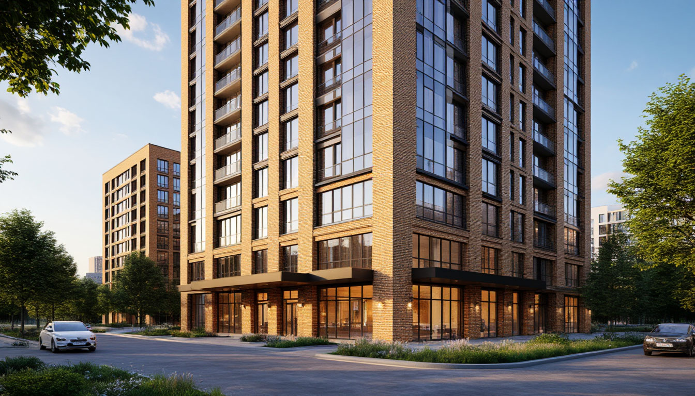
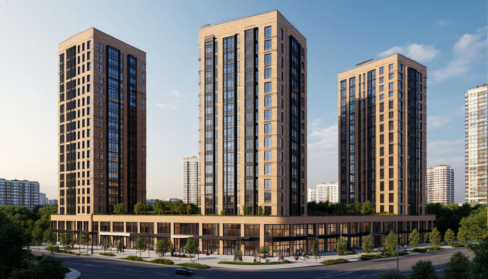

АКТИОНСтроительство· Высшая инженерная школа← Все шаги
ФОТО
Евгений Эрман, к.т.н.
руководитель Лаборатории ИИ-решений девелоперской компании «РАЗУМ»
Автор урока
Курс «30 шагов: рабочий ИИ-инструмент для строителя» · Неделя 3 · Шаг 20 · Роль: ГИП / архитектор-концепт / маркетинг
Шаг 20. ИИ-графика 1: рендер по описанию
Нужна картинка фасада для совещания завтра утром — визуализатор освободится только через неделю. С ИИ концепт-рендер по текстовому описанию готов за 10 минут вместо недели ожидания. Но у этой скорости есть строгая граница: концепт — не проект.
Ассистент · Уровень 2 · библиотека промптов⏱ 15–20 минут🎓 Уверенный
⚙ Для переноса в платформу Актион
Платформа подставляет роль пользователя автоматически из профиля (П-4 «выбор роли» из требований к разработке) — строка «Роль: …» выше должна обновляться без правки HTML урока.
📄 К уроку приложены: промпт-пак демо-рендеров ЖК «Уютный дом на Матвеева», разбор «неправильный/правильный промпт» и три изображения-примера.
1 · Зачем это нужно
Рендер для совещания — за 10 минут, а не за неделю
Классический сценарий девелопера: нужна картинка фасада или двора для внутреннего совещания, слайда защиты концепции или обсуждения с архитектором — а штатный визуализатор занят на неделю вперёд рабочими задачами по проекту. Ждать нельзя, решение нужно обсудить завтра.
Генеративная ИИ-графика закрывает именно этот разрыв: по текстовому описанию объекта — этажность, материалы фасада, ракурс, освещение — можно получить концепт-рендер за несколько минут, показать его на совещании, обсудить образ и итерировать за то же совещание.
💡 Зачем это вам: визуализатор и BIM-специалист остаются для того, что действительно требует их квалификации — проектной визуализации; ИИ-рендер закрывает быстрые внутренние обсуждения и коммуникацию, не претендуя на их работу.
Что вы освоите в этом уроке
Где проходит граница между концепт-рендером и проектной визуализацией — и почему её нельзя нарушать.
Структуру промпта для рендера: объект + ракурс + стиль + материалы + свет + время суток.
Как итерациями одного промпта получить несколько вариантов фасада для сравнения.
2 · Границы (обязательный экран)
Концепт ≠ проект
Прежде чем генерировать первую картинку, нужно закрепить правило, которое действует на весь блок ИИ-графики: ИИ-рендер — это концепт и коммуникация, а не проектное решение. Он не заменяет архитектурную визуализацию по проекту, BIM-модель и рабочие чертежи.
✕ Нельзя
Использовать ИИ-рендер как часть проектной (ПД) или исполнительной (ИД) документации.
Считать геометрию, размеры, инсоляцию, конструктив «по картинке» — их определяет только проект.
Выдавать сгенерированное изображение за фактический вид объекта без пометки.
✓ Можно
Показать образ и настроение фасада/двора на внутреннем совещании или слайде концепции.
Сравнить варианты облицовки между собой, чтобы выбрать направление для дальнейшей проработки архитектором.
Использовать в рекламе и продажах — обязательно с пометкой об условном характере изображения.
Закон о рекламе
Если ИИ-рендер попадает в маркетинговые материалы (сайт, буклет, баннер) — обязательна пометка: «изображение носит условный характер и может отличаться от фактического вида объекта». Это не формальность, а требование закона о рекламе к любой визуализации будущего объекта.
Права на сгенерированное изображение
Условия использования результата различаются у каждого сервиса: где-то права на изображение принадлежат пользователю сразу, где-то — только на платном тарифе, где-то есть ограничения на коммерческое использование. Перед тем как использовать рендер в рекламе или презентации инвестору — проверьте условия конкретного сервиса.
Инструменты урока (RU-first)
Показываем на российских инструментах — работают без VPN, бесплатно, на русском языке промпта:
Шедеврум (Яндекс) — текст → изображение, выбор модели, бесплатное приложение и веб-версия.
⚖️ Три вещи держать в голове весь урок: концепт ≠ проект · пометка «носит условный характер» в рекламе · проверка прав перед коммерческим использованием.
3 · Первый рендер
Промпт по ТЭП кейса
Возьмём технико-экономические показатели ЖК «Уютный дом на Матвеева»: монолитный каркас, 25 этажей, 3 секции, навесной фасад с лицевым кирпичом, встроенно-пристроенные коммерческие помещения на первом этаже. Соберём из них промпт по формуле:
💡 Структура промпта для рендера: [объект и этажность] + [ракурс] + [стиль/качество] + [материалы фасада] + [освещение/время суток].
Фотореалистичный архитектурный рендер современного жилого комплекса комфорт-класса,
переменная этажность 9–25 этажей, три секции, монолитный каркас, навесной вентилируемый
фасад с лицевым кирпичом тёплого песочного оттенка, панорамное остекление, входная группа
с витражом и козырьком, коммерческие помещения на первом этаже. Дневной свет, лёгкие облака,
вид с угла улицы, широкоугольный объектив, высокая детализация, архитектурная визуализация.

Результат промпта Г2 в Шедеврум (YandexART). Кирпичный фасад, коммерция на первом этаже, дневной свет — образ считывается, но так ли он соответствует проекту? Разберём на следующем экране.
🔗 Присмотритесь сами: в паспорте кейса — 25 этажей и 3 высотные секции. Посчитайте на глаз, сколько этажей на картинке. Совпадает? К этому вопросу вернёмся в следующем блоке.
4 · Плохой и хороший промпт
Один и тот же кейс — два промпта, два результата
Промпт из предыдущего экрана выглядит подробным — но результат не соответствует проекту: вместо высотного 25-этажного дома получилась «уютная среднеэтажка». Разберём, почему, и как это исправить.
✕ Размытый промпт → случайный результат
…переменная этажность 9–25 этажей, три секции, навесной фасад с лицевым кирпичом, панорамное остекление, коммерция на первом этаже, благоустроенный двор без машин, дневной свет, вид с угла улицы.
«9–25 этажей» — модель усредняет диапазон и рисует ~12–14 этажей.
«три секции» — не читается моделью как высотность, получается малоэтажное каре.
«коммерция на 1 этаже» без слова «стилобат» — типология съезжает к европейскому кварталу.
✓ Точный промпт → управляемый результат
…современного высотного жилого комплекса: три башни по 25 этажей, монолитный каркас, навесной фасад с лицевым кирпичом тёплого песочного оттенка и тёмными оконными рамами, двухэтажный стилобат с коммерцией на первом этаже, городская среда, вид с угла улицы снизу вверх, акцент на высоту здания.
Точное число + «башни» вместо «секций» — однозначный образ высотности.
«Стилобат» задаёт городскую типологию вместо малоэтажного каре.
Ракурс «снизу вверх» физически заставляет камеру показать высоту здания.
До. Размытый промпт («9–25 этажей», «три секции») — модель нарисовала ~12–14 этажей и малоэтажный образ. Типология не совпадает с проектом.

После. Точный промпт («три башни по 25 этажей», «стилобат», ракурс снизу вверх) — типология совпала с проектом: высотные башни, стилобат с коммерцией, тот же кирпичный фасад.
Что именно изменилось в промпте
Было (сбивало)
Стало (исправили)
Почему сработало
«переменная этажность 9–25»
«три башни по 25 этажей»
Модель усредняет диапазон; точное число + единый образ убирают «усреднение».
«три секции»
«три башни»
«Секция/подъезд» не читается как высотность; «башни» — однозначно высотный объём.
нет слов о высоте
«высотного», «акцент на высоту», «вид снизу вверх»
Слова-якоря и нижний ракурс заставляют показать высоту, а не уютную среду.
«коммерция на 1 этаже»
«двухэтажный стилобат» с коммерцией
«Стилобат» задаёт городскую типологию вместо европейского каре.
Нейросеть управляется типологическими образами, а не цифрами: точные слова-типы («башни», «стилобат»), ракурс и один главный объект на кадр — вот что делает результат управляемым, а не случайным.
⚖️ И даже исправленный рендер остаётся концептом: точное число этажей не гарантировано, геометрия и фасадные узлы — приблизительные. Для рекламы и совещаний — годится с пометкой «изображение носит условный характер»; для проектных решений — только проектная визуализация.
5 · Варианты облицовки
Один дом — три материала фасада
Когда типология промпта зафиксирована (высотные башни, стилобат, ракурс), дальше можно быстро проитерировать: менять один параметр за раз — материал фасада — и сравнивать образы между собой.
Вариант
Что меняем в промпте
А · Лицевой кирпич
«навесной фасад с лицевым кирпичом тёплого песочного цвета, контрастные тёмные оконные рамы»
Б · Навесной вентфасад
«навесной вентилируемый фасад из крупноформатного керамогранита серо-графитового цвета, вертикальные акцентные ламели»
Варианты облицовки и благоустройства двора одного и того же дома — итерации одного промпта с заменой одного параметра (материал фасада).
💡 Приём для серии кадров одного объекта: зафиксируйте «словарь облика» — материал, цвет, оконные рамы, стилобат, этажность — и вставляйте его в каждый следующий промпт без изменений. Тогда разные кадры (фасад, двор, вечер) будут читаться как один комплекс.
6 · Сделай в живом чате
Сделай в живом чате
Сгенерируйте рендер своего объекта (или учебного варианта) по структуре промпта из этого урока: объект + ракурс + стиль + материалы + свет + время суток. Используйте один из RU-инструментов ниже. Затем вставьте свой промпт и опишите результат в поле под кнопками.
Итоги урока откроются после того, как вы вставите промпт, результат и отметите чекбокс.
⚙ Для переноса в платформу Актион
Демо-гейт реализован локальным JS (без сохранения данных). На платформе эта блокировка должна опираться на реальное событие взаимодействия участника с чатом (или просто на заполненные поля + чекбокс, как здесь) — ничего никуда не отправляется и в демо-версии.
🔒 Сначала блок «Сделай в живом чате»
7 · Самопроверка
Перед сдачей отметьте
0 из 4 — пройдитесь по списку
🔒 Сначала блок «Сделай в живом чате»
8 · Практика и проверка
Сделайте на своей задаче
Возьмите реальный (или учебный) объект со своего проекта и соберите промпт по структуре урока: объект + ракурс + стиль + материалы + свет + время суток. Сравните результат с ТЭП проекта — что пришлось бы уточнить в промпте, чтобы типология совпала.
⚙ Для переноса в платформу Актион
Здесь платформа подключает отправку куратору (см. паспорта шагов). В демо-комплекте вместо реальной отправки — локальное скачивание .txt с текстом задания, ничего никуда не отправляется.
⬆️ Ассистент закрепил навык «рендер по описанию». Что забрать: граница концепт/проект усвоена; структура промпта (объект + ракурс + стиль + материалы + свет) — управляемый инструмент, а не лотерея; итерации одним параметром дают серию вариантов для сравнения.